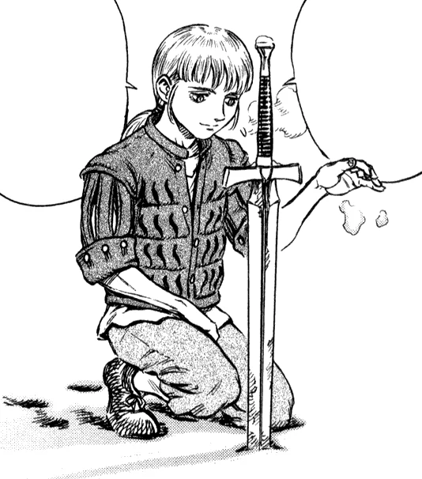

Rickert

Rickert e um jovem branco, com cabelos loiros e olhos castanhos. Não e adulto embora seja um dos três únicos membros sobreviventes do Bando do Falcão, sua aparência mudou com o passar do tempo. Na sua primeira aparição ele era uma criança com um sorriso inocente e foi crescendo durante a Era do Ouro. Quando Guts retorna de sua viagem de dois anos contra apóstolos, Rickert cresceu a uma idade quase adulta, Guts não o reconheceu. O seu cabelo também cresceu e é amarrado em um rabo de cavalo, e muitas vezes ele tem um lenço em sua cabeça como de um ferreiro.
Personalidade
Personalidade
Rickert, sendo um dos personagens mais jovens da serie, tem uma personalidade gentil, racional, e um tanto infantilmente inocente oque contrai a personalidade de um mercenário típico apesar de que ele já foi um. Durante a Batalha de Doldrey, ele faz um breve discurso sobre os falcões serem encurralados: prefiro lutar e morrer que morrer e não fazer nada. Percebido por Corkus como indicação de que Rickert tinha perdido a cabeça. A festa da comemoração que comemora o fim da ''Guerra dos Cem Anos'' demonstrou sua infantilidade, em que as mulheres o bajularam por ser novo em idade. Guts já salvou Rickert durante a sua primeira batalha com os Falcões, isso provocou uma amizade entre os dois, sua gentileza foi comentada por Guts e por isso Guts não o permitiu acompanha-lo em sua jornada e por Rickert ser incapaz de odiar Griffith. Rickert também e muito amigo de Pippin e de Judeau, Rickert e gentil e deve ter uma facilidade em conseguir amigos, Rickert sente-se que deve saber o que aconteceu com o Bando do Falcão e perguntou ao Guts e não obteve uma rápida resposta. Rickert sente-se responsável pelo quando Rica perdeu Casca (pós eclipse), Rickert ficou um tempo de um mês fora procurando Casca. Quando Guts voltou de sua viagem de dois anos Guts ficou bravo com Rickert por Casca ter sumido e Rickert ficou triste por isso.
História